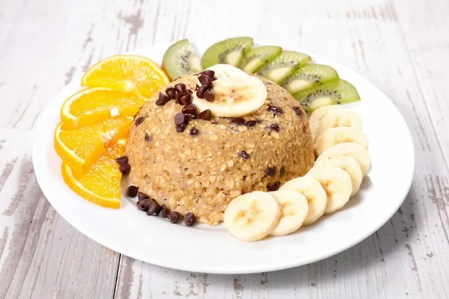

Petit-déjeuner · Jour Modéré · Micro-ondes
Bowlcake Express
chocolat, skyr & avoine
Un petit-déjeuner express, moelleux et rassasiant, avec une option topping pour atteindre environ 30 g de protéines.

Ingrédients recalculés
Calculateur de portions
Quantités affichées pour 1 portion.
- 30 g de flocons d’avoine KoRo
- 1 œuf
- 80 g de skyr nature
- 30 g de compote de pommes sans sucres ajoutés
- 3 g de levure chimique
- 10 g de chocolat noir Nestlé Dessert 70 %
- Vanille ou cannelle
- Édulcorant selon le goût, facultatif
Préparation
- Mélanger l’œuf, les 80 g de skyr et la compote dans un bol.
- Ajouter les flocons d’avoine, la levure et la vanille ou la cannelle.
- Mélanger jusqu’à obtenir une pâte homogène.
- Incorporer le chocolat noir coupé en petits morceaux.
- Faire cuire 2 min 30 à 3 min au micro-ondes à 800 W.
- Arrêter la cuisson lorsque le centre est encore légèrement moelleux.
- Laisser reposer 1 minute avant de démouler ou de déguster directement dans le bol.
Valeurs nutritionnelles
| 1 portion | + 120 g de skyr | + protéine végétale | |
|---|---|---|---|
| Calories | ≈ 307 kcal | ≈ 374 kcal | ≈ 362 kcal |
| Protéines | ≈ 19 g | ≈ 30,2 g | ≈ 30,2 g |
| Glucides | ≈ 28,6 g | ≈ 33 g | ≈ 28,8 g |
| Lipides | ≈ 11,9 g | ≈ 12,5 g | ≈ 13 g |
Consigne Jour Modéré
Un petit-déjeuner adapté à une journée modérée en glucides. Choisir l’une des deux options protéinées pour atteindre l’objectif de 30 g de protéines.